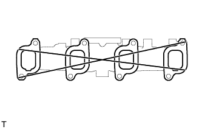
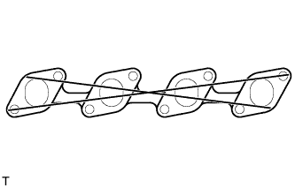
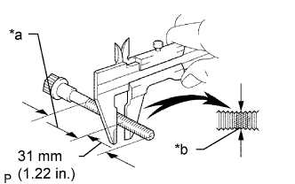

БЛОК ДВИГАТЕЛЯ > ПРОВЕРКА |
| 1. INSPECT CAMSHAFT |
Inspect the circle runout.
Place the camshaft on V-blocks.
Using a dial indicator, measure the circle runout at the center journal.
Using a micrometer, measure the cam lobe height.
| Cam Lobe | Specified Condition |
| Intake | 54.890 to 54.910 mm (2.1610 to 2.1618 in.) |
| Exhaust | 54.990 to 55.010 mm (2.1650 to 2.1657 in.) |
| cam Lobe | Specified Condition |
| Intake | 54.39 mm (2.141 in.) |
| Exhaust | 54.49 mm (2.145 in.) |
| 2. INSPECT INTAKE MANIFOLD |
|  |
Using a precision straightedge and feeler gauge, measure the surface that contact the cylinder head for warpage.
| 3. INSPECT EXHAUST MANIFOLD |
|  |
Using a precision straightedge and feeler gauge, measure the surface that contact the cylinder head for warpage.
| 4. INSPECT CYLINDER HEAD SET BOLT |
|  |
Using a vernier caliper, measure the minimum outer diameter of the elongated thread at the measuring point.
| *a | Measuring Point |
| *b | Elongated Thread |